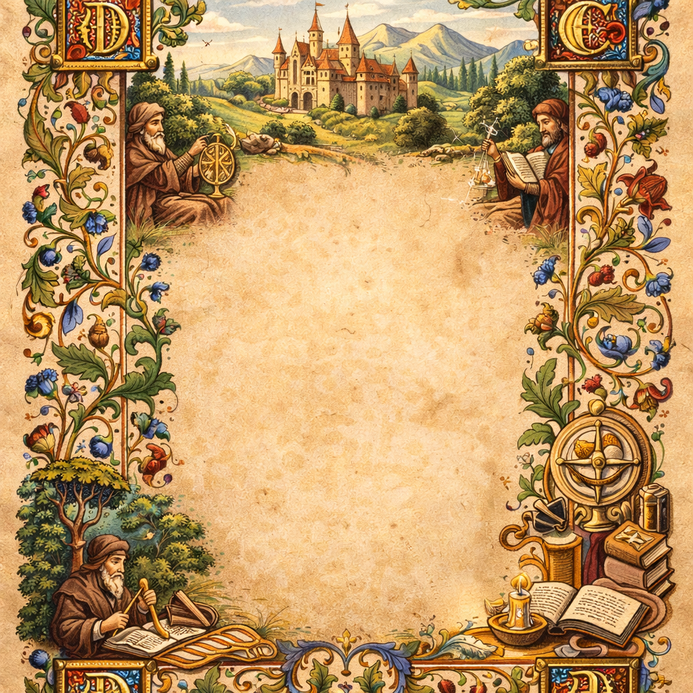
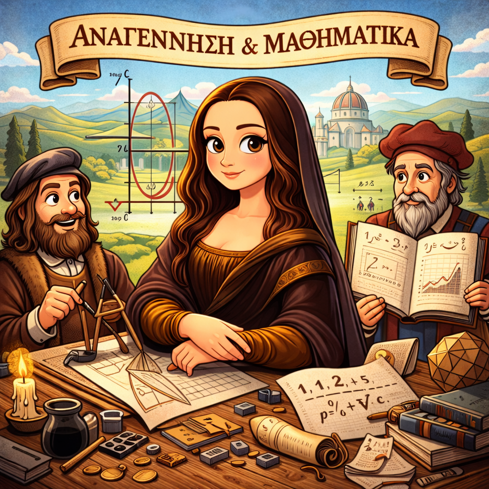

Έχετε φυλακιστεί σε αυτό το επιβλητικό αναγεννησιακό κάστρο! Ο μόνος τρόπος για να ξεφύγετε είναι να αποδείξετε ότι είστε πραγματικοί Οικουμενικοί Άνθρωποι (Homo Universalis).
Για να απελευθερωθείτε, πρέπει να απαντήσετε σωστά και στους 10 γρίφους (Ιστορικούς και Μαθηματικούς) που ακολουθούν. Καλή τύχη, λόγιοι!
Ιστορικό Πλαίσιο: Κατά την Αναγέννηση, τα βιβλία έγιναν φθηνότερα και πιο προσιτά διευκολύνοντας τη διασπορά της γνώσης στην Ευρώπη.
📜 Ιστορικός Γρίφος
Σύμφωνα με το κείμενο, πού και πότε εφευρέθηκε η τυπογραφία με κινητά μεταλλικά στοιχεία από τον Ιωάννη Γουτεμβέργιο;
📐 Μαθηματικός Γρίφος
Ένας τυπογράφος έχει σταθερό κόστος για τη στοιχειοθεσία \(150\) χρυσά νομίσματα. Επιπλέον, το κόστος για το χαρτί/μελάνι κάθε βιβλίου είναι \(2\) νομίσματα. Αν διαθέτει συνολικό προϋπολογισμό \(850\) χρυσά νομίσματα, ποιος είναι ο ακριβής αριθμός των βιβλίων που μπορεί να τυπώσει;
Βήματα: Έστω \(x\) ο αριθμός βιβλίων. Εξίσωση: \(2x + 150 = 850\) → \(2x = 700\) → \(x = 350\).
Αποστολή 2: Οι Κυνηγοί Χειρογράφων

Ιστορικό Πλαίσιο: Ο άνθρωπος της Αναγέννησης στράφηκε προς τον ελληνορωμαϊκό πολιτισμό. Οι λόγιοι ταξίδευαν συλλέγοντας σπάνια αρχαία χειρόγραφα από βιβλιοθήκες.
📜 Ιστορικός Γρίφος
Ποιοι ήταν δύο από τους σημαντικότερους Έλληνες λόγιους που ενίσχυσαν τις ανθρωπιστικές σπουδές στη Δύση;
📐 Μαθηματικός Γρίφος
Δύο λόγιοι συλλέγουν χειρόγραφα. Ο 1ος έχει \(15\) και εντοπίζει \(3\) νέα κάθε μήνα. Ο 2ος έχει μόνο \(5\), αλλά εντοπίζει \(5\) νέα κάθε μήνα. Σε πόσους μήνες, \(x\), θα έχουν συγκεντρώσει τον ίδιο αριθμό χειρογράφων;
Ιστορικό Πλαίσιο: Στις ακμαίες πόλεις της Ιταλίας, οι πνευματικές και καλλιτεχνικές δραστηριότητες ενθαρρύνονταν από διάσημους χρηματοδότες της τέχνης.
📜 Ιστορικός Γρίφος
Ποια ονομαστή οικογένεια είχε τον ρόλο του "μαικήνα" προστατεύοντας τις τέχνες στη Φλωρεντία;
📐 Μαθηματικός Γρίφος
Ένας μαικήνας ορίζει ότι ένας ζωγράφος θα λάβει ως προκαταβολή το \(\frac{1}{3}\) της συνολικής του αμοιβής. Στη μέση της εργασίας θα λάβει επιπλέον \(200\) νομίσματα και στην παράδοση τα τελικά \(800\) νομίσματα. Αν \(x\) η συνολική αμοιβή, ποια είναι η τιμή του \(x\);
Ιστορικό Πλαίσιο: Οι καλλιτέχνες της εποχής, όπως ο Λεονάρντο ντα Βίντσι, προχώρησαν περισσότερο την τέχνη τους εφαρμόζοντας μαθηματικές τεχνικές στους καμβάδες τους.
📜 Ιστορικός Γρίφος
Πώς ονομάζεται η τεχνική που εφάρμοσαν οι αναγεννησιακοί καλλιτέχνες για να δώσουν την αίσθηση του βάθους στις απεικονίσεις τους;
📐 Μαθηματικός Γρίφος
Ένας μαθητής σχεδιάζει στο καρτεσιανό επίπεδο. Η ευθεία που ορίζει μια "γραμμή φυγής" περνά από την αρχή των αξόνων \((0,0)\) και από το σημείο \((3, 6)\). Από ποιο από τα παρακάτω σημεία θα περάσει οπωσδήποτε η προέκτασή της;
Βήματα: Περνά από \((0,0)\), άρα \(y = ax\). Περνά από \((3,6)\), άρα \(6 = a \cdot 3 \Rightarrow a = 2\). Η εξίσωση είναι \(y = 2x\). Ισχύει για το \((5,10)\).
Αποστολή 5: Η Βιβλιοθήκη των Λογίων

Ιστορικό Πλαίσιο: Οι ανθρωπιστές ταξίδευαν στην Ευρώπη δημιουργώντας ένα πνευματικό δίκτυο, με τις πλούσιες βιβλιοθήκες τους να αποτελούν τα κέντρα της γνώσης.
📜 Ιστορικός Γρίφος
Πώς ονομάστηκε το δίκτυο σχέσεων και πολιτισμού που δημιούργησαν οι ανθρωπιστές ταξιδεύοντας για να διαδώσουν τις ιδέες τους;
📐 Μαθηματικός Γρίφος
Ένας λόγιος έχει ήδη \(10\) σπάνια χειρόγραφα και αγοράζει σταθερά \(5\) νέα βιβλία κάθε χρόνο. Αν παραστήσουμε γραφικά τον αριθμό βιβλίων \(y\), σε σχέση με τα έτη \(x\), ποια πρόταση είναι σωστή;
Βήματα: Η εξίσωση είναι \(y = 5x + 10\). Για να βρούμε το σημείο τομής με τον \(y'y\), θέτουμε \(x = 0\) και προκύπτει \(y = 10\).
✨ Αποστολή Εξετελέσθη! ✨
Συγχαρητήρια! Απαντήσατε σωστά και στους 10 γρίφους.
Αποδείξατε ότι κατέχετε μαθηματικές, ιστορικές και αναλυτικές δεξιότητες. Έχετε ξεκλειδώσει το ιδανικό της Αναγέννησης: Είστε ένας πραγματικός "Οικουμενικός Άνθρωπος" (Homo Universalis)!